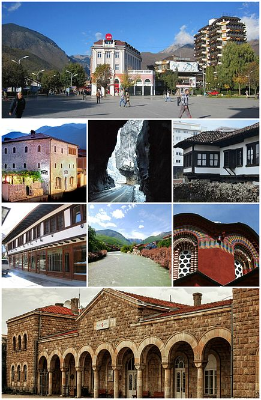
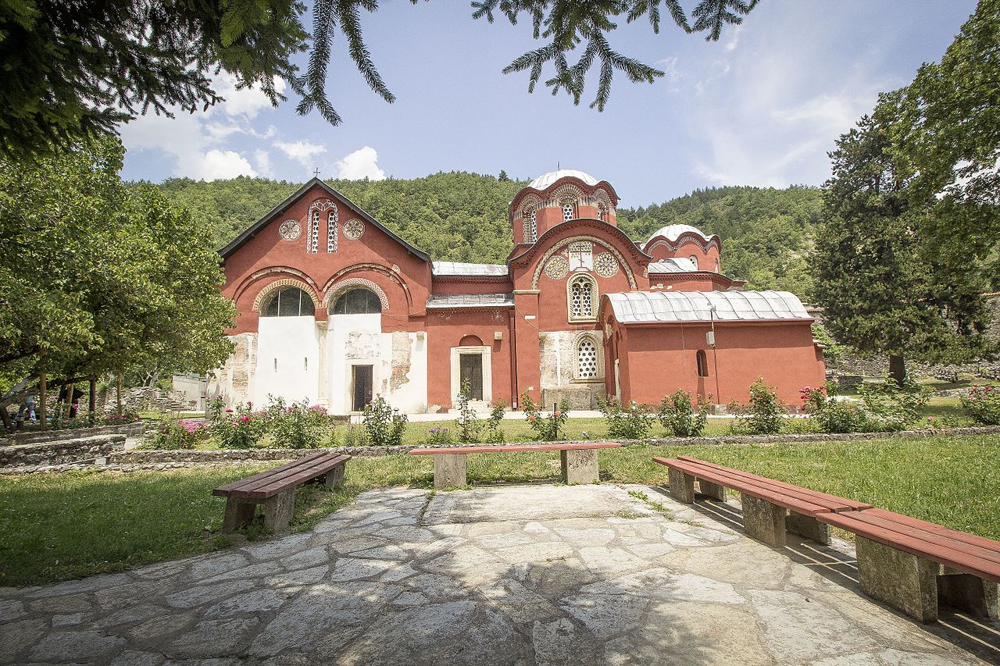
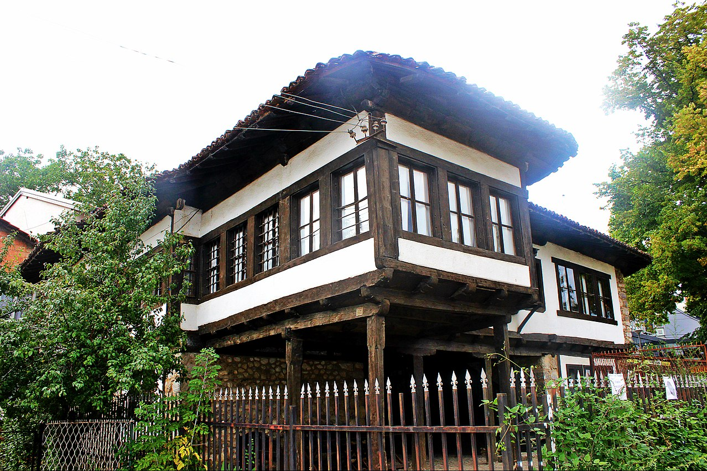
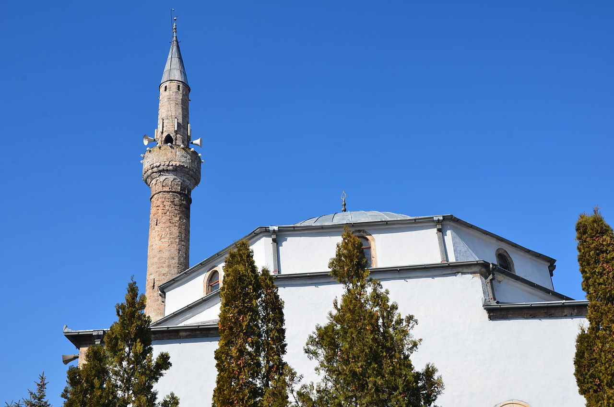

-PEJA-

Peja (definite Albanian form: Pejë pronounced [pɛˈjə]) or Peć
is the fourth largest city of Kosovo and seat of Peja Municipality and Peja District.
It is situated in the region of Rugova on the eastern section of the Accursed Mountains along Peja's Lumbardh in the western part of Kosovo.
In medieval times the city, then commonly known under its Serbian name, was the seat of the Serbian Orthodox Church in 1346.
The Patriarchal monastery of Peć is a UNESCO World Heritage Site as part of the Medieval Monuments in Kosovo.
Under Ottoman rule the city, then commonly known under the Turkish name İpek, became a district capital with mosques and civil architecture.
From the end of the nineteenth century until today,the city has been the site of nationalist aspirations and claims for both
ethnic Albanians and Serbs, often resulting in tense inter-ethnic relations and conflict.

The city is located in a strategic position on Peja's Lumbardh, a tributary of the White Drin to the east of the Accursed Mountains
The medieval city was possibly built on the ruins of Siparant(um), a Roman municipium (town or city).
The area has the most unearthed stelae in all of Kosovo.
Slavs (Sclaveni and Antes) settled the Balkans, heavily depopulated by "Barbarians", in the 6th century.
The Byzantine Empire and the First Bulgarian Empire fought for control of the area until it finally fell under full Serbian control.
Between 1180 and 1190,
Serbian Grand Prince Stefan Nemanja liberated Peja with its surrounding župa (district) of Hvosno from the Byzantine Empire,
thus establishing Serbian rule over the city of Peja for next 300 years.
In 1220, Serbian King Stefan Nemanjić donated Peja and several surrounding villages to his newly founded monastery of Žiča.
As Žiča was the seat of a Serbian archbishop,
Peja came under direct rule of Serbian archbishops and later patriarchs who built their residences and numerous churches in the
city starting with the church of Holy Apostles built by archbishop Saint Arsenije I Sremac.
After the Žiča monastery was burned by the Cumans (between 1276 and 1292) the seat of Serbian archbishop was transferred to a
more secure location - Patriarchal Monastery of Peć where it remained until the abolition of the Serbian Patriarchate of Peć in 1766.
Ottoman rule came to an end in the First Balkan War of 1912–13, when Montenegro took control of the city on 28 October 1912.
On 8 January 1916, during World War I, Austria-Hungary took the city. Peja was taken by Serbian forces on 17 October 1918.
After World War I, the city became part of Yugoslavia (at first officially called the Kingdom of Serbs, Croats and Slovenes).
Between 1931 and 1941 the city was part of Zeta Banovina.
During World War II Peja was occupied by the Italian puppet state of Albania.
After the war,Peja again became part of Yugoslavia as part of the Autonomous Region of Kosovo and Metohija (1945–1963),
an autonomous unit within the Socialist Republic of Serbia.
Peja in Western Kosovo near the Rugova Canyon or Gorge.
Rugova is a mountainous region entered through the North-West part of the city of Peja. It is the third region of Accursed Mountains.
In 2013 it became a National Park. Rugova is known for its natural environment and access to the mountains.
The city is located some 250 kilometres (155 miles) north of Tirana, Albania, 150 kilometres (93 miles) north-west of Skopje,
North Macedonia, 85 kilometres (52 miles) west of Pristina, Kosovo and some 280 kilometres (173 miles) east of Podgorica, Montenegro.
Peja is rapidly developing a significant tourist infrastructure.
You can find information and maps for the "Trail of Cultural Monuments"
at the Tourist Information Office as well as maps and attractions in the Rugova Gorge/Canyon and surrounding mountains.
Skiing is available at the Ski Center in Bogë nearby. One of the most exciting new attractions is the Peak of the Balkans trail.
The trail wanders through 3 countries with mountain views and can be supported by local guides and tour companies.
Pećka Banja is a township located in the municipality of Istok, Kosovo. To many people it is known with the name Ilixhe.
It is a touristic-health center with services in Istok and in the region,
highly developed infrastructure and every service needed for healthy living.
The cite has seen a bloom of tourism with a new Zip Line, and two Via Ferrata,
built between 2013 and 2016. In the city there are a number of tour operators that function,
with Balkan Natural Adventure, being the main one with a full palette of services.
Education in Peja is a system with no tuition or fees, mandatory for all children between the ages of 6-18.
It consists of a nine-year basic comprehensive school (starting at age six and ending at the age of fifteen)
secondary general and professional education commonly known as high school and higher education at Haxhi Zeka University of Peja.
It also includes non-mandatory daycare programs for babies and toddlers and a one-year "preschool".
The school year runs from early September to late June of the following year. Winter break runs from late December to early January,
dividing the school year into two semesters.
Peja is the only city in Kosovo that offers high school education in arts and there is also a school for the visually impaired.
The Agjencia e Statistikave të Kosovës (ASK) estimated the population of the municipality of Peja at 96,450 in 2011.
According to the 1981 census, the city urban area had a population of 54,497 inhabitants;
according to the 1991 census it had grown to 68,163.[18] According to the 2011 census, around 49,000 people live in the city of Peja.
The vast majority of the inhabitants are Kosovo Albanians. Most Kosovo Serbs live in the village enclaves of Goraždevac,
Belo Polje and Ljevoša. There is also a large Bosniak community in the city of Peja and in Vitomirica, while significant Roma,
Ashkali and Egyptian communities reside in urban and rural areas.
The architecture in Peja show different architectural styles, from the medieval Serbian, Ottoman, Yugoslav, and contemporary architecture.
Because of this there are many churches, mosques, buildings which are attraction points in the city and were built by the aforementioned influences.
Notable architectural traits of Peja include:


- Bazaar of Peja
- Bajrakli Mosque
- Hamam of Peja
Peja has one local cinema, Kinema Jusuf Gërvalla, which also functions as a cultural center. It was built in 1955 with money of the Workers’ Union.
Back then, the cinema was called 'Kino Rad' ('Workers' Cinema'). Its goals was to provide a cultural space in the city of Peja.
During the period 1955-1998 it served as a central point of joint cultural activities for the residents of Peja. Activities included screenings of
the latest films, public discussions, music concerts, theatrical performances and children’s programs.
The cinema was closed down when the war started in 1998 and was heavily damaged in the years after,
just like the rest of Peja. In 2000, the building was renovated and partly reconstructed.
In 2001, the cinema was reopened, with its name changed to ‘Kinema Jusuf Gërvalla’ in 2002.
However, activities became more sporadic, due to technical difficulties and lack of public interest.
^